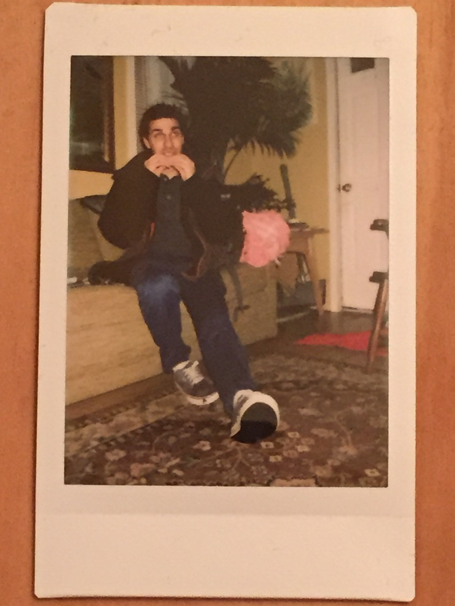

About Me
I am a undergraduate studying Computer Science at Villanova University. I am in the process of building this site and add content on a weekly basis.
I have a loudly professed appreciation for Wikipedia, Programming Languages, Art, and other information that is easily serialized.
In the past, I have worked in several different domains including: Artificial Neural Networks, Web Development, Signal Processing, and Natural Language Processing.
If you'd like, you may take a peek at my Resume (Last Updated 12/2/15).
Thoughts
| January 9th, 2016 | Neural Networks Emulating Artistry |
| January 6th, 2016 | Rack-O Clone |
| December 21st, 2015 | Pascal's Triangle and Path Finding |
| December 7th, 2015 | Maze Generation Algorithms |
Collections
| January 26th, 2016 | Recommended Albums |
| December 29th, 2015 | Wikipedia Favorites |
| December 14th, 2015 | Python One-Liners |
Workshops
| February 15th, 2016 | Git Investigation |
| February 4th, 2016 | Python Crash Course |